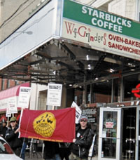
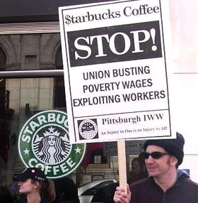

Submitted on Thu, 03/22/2007 - 2:39pm
 NBC King 5 video here of the protest and interview with Bean 2 Cup Campaigner Peter Van Schaick.
NBC King 5 video here of the protest and interview with Bean 2 Cup Campaigner Peter Van Schaick.
ABC KOMO-TV piece here: "Some Starbucks workers have aligned with the International [sic] Workers of the World to press for changes in Starbucks' policies. Schultz dismissed the efforts of 'fringe unions,'..."
Seattle Times piece here cites the protest and quotes a Starbucks investor in need of reading the 2006 Starbucks Corporate Irresponsibility Report: "Georgia McCollum, an investor from Gig Harbor, said when she heard there would be protests around the annual meeting this year — the Industrial Workers of the World helped lead a small rally for workers' rights outside McCaw Hall — "I couldn't think of one thing to protest."
Submitted on Wed, 03/21/2007 - 6:22pm
Sarah Bender, Starbucks barista and IWW member, traveled with a Justice from Bean to Cup! delegation to Ethiopia to meet coffee farmers growing the beans she brews at Starbucks. Sarah learns the disturbing truth behind a Starbucks Black Apron exlusive, the company's highest priced coffee label, in "Partners?":
Part I -
http://www.youtube.com/watch?v=9xTk_LLjxUkPart II -
http://www.youtube.com/watch?v=9petRD_Zss8
Submitted on Wed, 03/21/2007 - 6:16pm
Coffee farmers receiving just 2.2% of the retail sales of their beans at Starbucks?
Starbucks insuring a lower percentage of its workforce than Wal-Mart?
Is Starbucks' Corporate Social Responsibility Report a flashy exercise in Venti-sized deception?
Learn the reality behind Starbucks' socially responsible rhetoric in this new report from Justice from Bean to Cup! and the IWW Starbucks Workers Union. Find out what we learned on our trip to meet Ethiopian coffee farmers and what it's like to work behind the green apron in a Starbucks cafe.
Full text - 2006 Starbucks Corporate Irresponsibility Report
Submitted on Wed, 03/21/2007 - 5:59pm
 By CRAIG HARRIS - Seattle Post Intelligencer, March 20, 2007
By CRAIG HARRIS - Seattle Post Intelligencer, March 20, 2007
Like other investors in Starbucks Corp., Elizabeth Moon hasn't been thrilled with the company's traditionally high-flying stock taking a considerable slide this year.
Yet the retired Seattle insurance adjuster views the 11 percent drop since the end of 2006 as a blip in the road and says she's looking forward to today's annual meeting in McCaw Hall.
"The stock has gone up the past couple three days, and that is good, because we had a down trend for a while," said Moon, whose investment in the past six years has increased more than 200 percent. "But I think it's a well-run company and one of the things that impresses me is that it treats its employees well."
Submitted on Mon, 03/19/2007 - 11:30pm
For Immediate Release: IWW Starbucks Workers Union, StarbucksUnion.org March 15, 2007 Contact: starbucksunion@yahoo.com Press Conference: Baristas and Coffee Farmer Advocates to Speak Out Before Starbucks Annual Meeting Protest
Campaign Will Release Short Film on Starbucks Barista Delegation to Ethiopian Coffee Farms and "2006 Starbucks Corporate Irresponsibility Report"
WHO: Starbucks baristas, Ethiopian coffee farmer advocates, labor unionists, and community supporters with signs and banners.
WHAT: A press conference previewing the IWW Starbucks Workers Union and Justice from Bean to Cup! protest the next day at the Starbucks Shareholders Meeting. Current and former Starbucks employees and coffee farmer advocates will tell the true story behind the Starbucks brand; a vastly different picture than the company's socially responsible image it will showcase at the Annual Meeting.